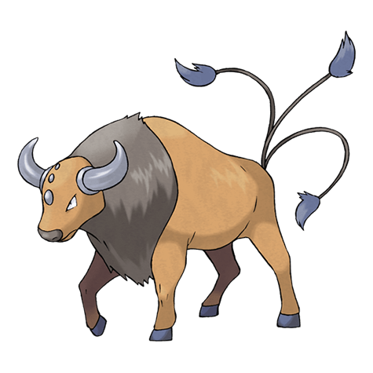

Назад
Таурос

Tauros — Покемон первого поколения под номером 128 в Покедекс. Обитает он в регионе Канто и относится к Нормальному типу. Тауросу нужно всё время неистово буйствовать. Если соперников для боя не находится, этот Покемон с разбегу валит толстые деревья, чтобы охладить свой пыл.
Тип:
Нормальный
Эволюция
# 128 Таурос